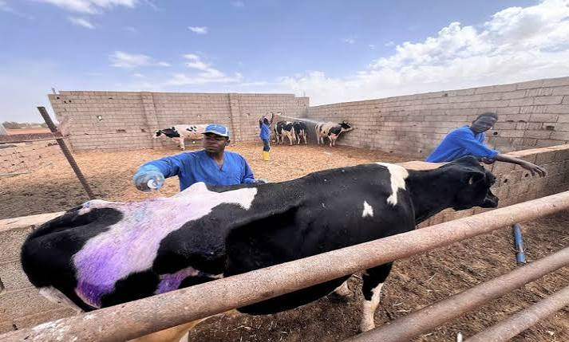
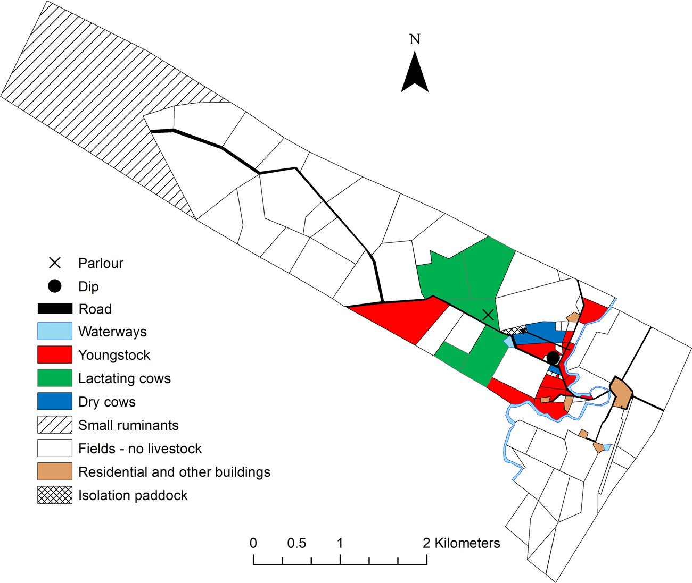
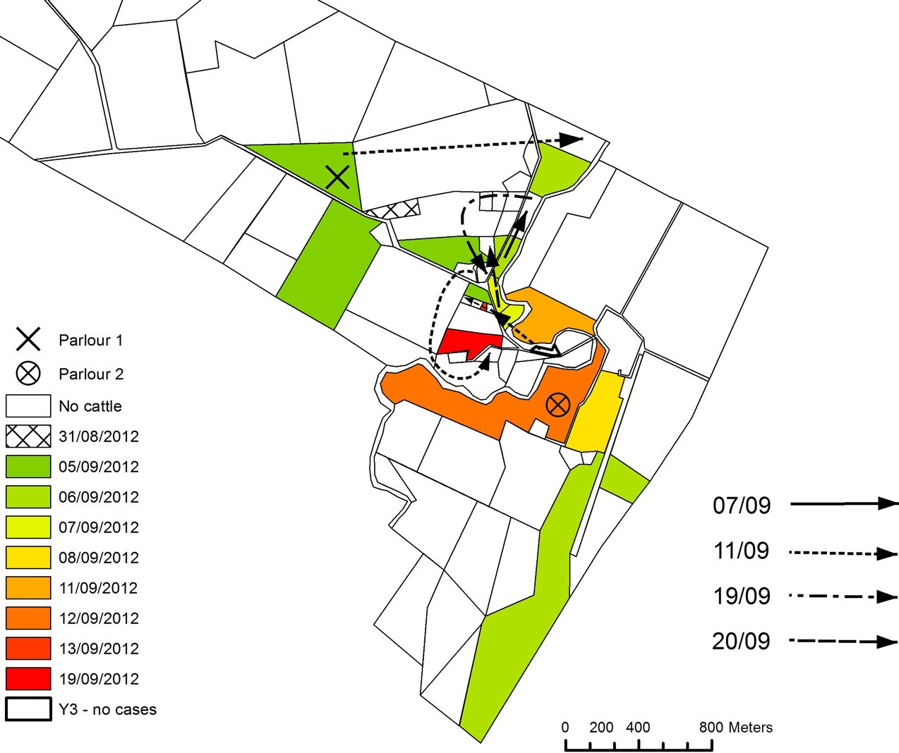
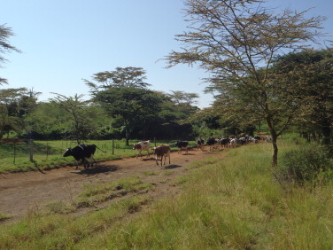

An outbreak investigation is detective work. You find out what the disease is, where it came from, how it spreads, and how to stop it. This module walks you through the 10 steps, using foot-and-mouth disease (FMD) as the example. At the end, you investigate a real FMD outbreak on a Kenyan dairy farm using its data.
Learning outcomes
By the end of this module you should be able to:
Explain what an outbreak is and why we investigate it.
List and describe the 10 steps of an outbreak investigation in order.
Write working, probable and confirmed case definitions for FMD.
Calculate attack rate (risk) and incidence rate (per animal-time), and explain when to use each.
Build and read an epidemic curve, and identify point-source, intermittent, continuous common-source and propagated patterns.
Construct tracing windows using FMD incubation periods (minimum 2 days, maximum 14 days).
Build a 2×2 table, then calculate and interpret a relative risk (RR) with its 95% CI.
Explain common reasons why vaccinated herds still get FMD.
Choose control measures and write a short outbreak report.
Key words WOAH definitions
OutbreakOne or more cases in an epidemiological unit. In practice: disease events clustered in time and space.
CaseAn individual animal infected by a pathogenic agent, with or without clinical signs.
Epidemiological unitA group of animals with the same likelihood of exposure to an agent (a herd, a pen, a village sharing grazing).
Index caseThe first case (animal, farm or village) identified in an outbreak.
Incubation periodTime from infection to the first clinical signs. For FMD: 2–14 days, usually 2–8.
SusceptibleAn animal that can be infected because it has no protective immunity.
Source: WOAH SRRSEA slides (Rinzin, 2025), "What is an outbreak?"; SEACFMD Field Manual (2018), §7.2 p.23 and App. B.2 p.A-50.
Why investigate an outbreak?
To identify the source(s) of infection.
To prevent further exposure to that source.
To find where the disease has spread, and stop it.
To guide control measures during and after the outbreak.
To learn how the disease behaves.
To learn the risks and routes of introduction, to prevent the next one.
Source: WOAH slides, "Why investigate an outbreak?"
The 10 steps at a glance
The steps run in order, but in real life they overlap. For example, you start simple control measures as soon as you suspect FMD (Step 9 ideas), long before you finish Step 8.
Source: WOAH slides, "Steps by steps guide to outbreak investigation and management"; SEACFMD Field Manual §10.2 p.37.
Check yourself Order
Tap the steps in the correct order (1 to 10). Tap a filled slot to remove it.
The running case FMD village, 2008
Throughout the 10 lessons we follow one example from the SEACFMD Field Manual. On 21 October 2008 you receive a report of sick cattle in a village. At the village, farmers tell you that Farm 1 saw signs first, on 12 October. Then Farm 6 (18 Oct), Farm 5 (19 Oct), Farm 3 (20 Oct) and Farm 2 (21 Oct) were affected. Farm 4 has no clinical signs. Several farms use a common grazing area.
In each step, the orange box shows how that step applies to this village or to FMD in general.
Source: SEACFMD Field Manual §5.2 Fig. 10 p.17 and §7.2 Fig. 13 p.24.
The investigation starts when the phone rings, not when you reach the farm. Record the report, pack the right kit, and collect background information before you leave.
What it is
You record the first report in a log book. You ask the 4 Ws and 1 H: What? When? Where? Why? How? Then you prepare equipment, plan biosecurity, and gather information about the place and the suspected disease.
Why it matters: good preparation lets you start control measures on the first visit, and stops you from carrying the virus to the next farm.
Key actions
Log-book entry: who reported, location, species, number sick and dead, signs, date of onset.
Team: decide roles. Plan a separate "clean" team for visits to farms not yet affected.
Equipment: PPE, restraint, disinfectant, sampling kit, forms, GPS and maps.
Biosecurity plan: leave the vehicle outside; visit clean areas first and sick groups last; disinfect boots, equipment and vehicle on leaving.
Background: previous outbreaks in the area, markets, slaughterhouses, animal trade routes.
The 4 Ws and 1 H
Question
Example
What?
Which species and age groups are affected?
When?
When did it start? When did it spread to other farms?
Where?
Where did it start? Where are the other affected farms?
Why?
Why did it occur in this area?
How?
How did the agent get onto this farm? How did it behave?
Source: SEACFMD Field Manual §1.4 p.2.
Farm records to request before the visit needed for Step 5
On a commercial farm, records are your best data. Ask for them early. Together they become your line list.
Herd registerAnimal ID (ear tag), birth date, sex, breed.
Group listsWhich animal is in which pen or paddock, and when.
Movement recordsAnimals moved between groups, bought, sold, born or dead.
Vaccination recordsDates, vaccine type and which animals were vaccinated.
Milk recordsA sudden drop in milk yield is an early FMD sign.
Treatment recordsWho was treated, when and for what.
FMD example Village 2008
The log-book entry for the village reads: farmer's name and address, "cattle and buffalo drooling, not eating, some lame", number sick, and the date. From this alone you can already suspect a vesicular disease such as FMD, so you pack a sampling kit with glycerine buffer tubes for epithelium, a cool box, disinfectant (for FMD, for example 4% washing soda or 1–2% sodium hydroxide), and forms.
Source: SEACFMD Field Manual §4.1–4.2 p.11–13 (Figs 8–9); App. D Equipment checklist p.A-61–62.
Check yourself Pack the kit
Common mistakes avoid
Driving your vehicle onto the farm. Park outside the farm gate.
Visiting the sick group first, then healthy groups. Always go from clean to dirty.
Forgetting to ask for herd and movement records. Without them you cannot calculate rates later.
Is there really more disease than usual? Or is it chance, a change in reporting, or a problem the farmer has always had?
What it is
You compare the observed number of cases with the expected number for this place and time. An outbreak means a true excess. Use objective data (records, counts), not only memories.
Remember to count the animals at risk. Ten sick cows means something different in a herd of 20 than in a herd of 2,000.
Why it matters: you do not want to waste resources on a false alarm, but you must not miss a real outbreak.
Key actions
Get counts: animals at risk, sick and dead, by species and age.
Find the expected level: past records, neighbouring farms, surveillance data.
Ask what the farmer thinks is "normal". Long-term problems make people accept high levels.
Check for artefacts: a new vet, a new test, or a campaign that increases reporting.
Remember: farmers' and workers' opinions are poor proof of an excess, but rich sources of hypotheses.
Special case: a vaccinated herd needed for the exercise
In a herd that is vaccinated regularly against FMD, the expected number of clinical FMD cases is close to zero. So even a few cases signal a real problem.
FMD is a notifiable disease. A suspected case must be reported to the national veterinary authority, which reports to WOAH.
Outbreak or not? Preweaning mortality example
Two pig farms recorded monthly preweaning mortality from 1993 to 1997. The drawings below copy the shape of the two graphs in the WOAH slides (illustrative values).
Farm AFarm B
Source: WOAH slides, "Is there a true excess (more than usual) of disease?"
FMD example Village 2008
In the village, 23 of 130 cattle and buffalo are sick with drooling and foot lesions within 10 days. Farmers say they have not seen this since a previous outbreak years ago. Observed (23) is far above expected (about 0), and the signs are severe and similar. This is enough to treat it as an outbreak and start control measures while you confirm the diagnosis.
Source: SEACFMD Field Manual §5 p.14–15; §4.1 p.11 (independent reports from more than one source are strong evidence of a true outbreak).
Check yourself
Common mistakes avoid
Comparing case counts without the number at risk.
Ignoring a report because "it has already recovered". A finished outbreak still tells you about its source.
Examine the animals, list the differentials, take the right samples, and get laboratory confirmation. For FMD you also need the serotype.
What it is
You make a clinical diagnosis, then confirm it in the laboratory. Do not wait for the lab result to start control measures. If several animals show vesicles in the mouth or on the feet, act on the suspicion.
Why it matters: the diagnosis decides the incubation period, the control measures and the vaccine you use.
FMD clinical signs
Species
Signs
Cattle
Fever (≈40 °C, 1–2 days); vesicles on tongue, gums, lips, dental pad, feet and teats; profuse drooling (hyperptyalism); dramatic drop in milk yield; lameness; off feed. Young calves may die suddenly (myocarditis).
Pigs
Lameness; vesicles on coronary band and heel (most consistent sign), snout and tongue; huddling; piglet deaths.
Sheep, goats
Signs are mild and easy to miss. Lameness is often the first sign. Examine 10–20 animals.
Source: SEACFMD Field Manual App. B.5 p.A-52–53.
Ageing lesions
Lesion age tells you when signs started, and so when exposure happened.
Day
Appearance
1
Blanching, then fluid-filled vesicles.
2
Freshly ruptured: raw epithelium, clear edge, no fibrin.
3
Edge less sharp, less red; fibrin starts.
4
Much fibrin; epithelium regrowing at the edge.
7
Extensive scar tissue and healing; some fibrin.
Source: SEACFMD Field Manual App. B.6, Table 5 p.A-54.
Samples and tests
Epithelium from fresh or ruptured vesicles, and vesicular fluid: best for finding the virus. Put epithelium in glycerine buffer; keep cool.
Serum (plain tube): for antibodies.
Antigen ELISA and RT-PCR: detect the virus and give the serotype.
VNT and SP-ELISA: serotype-specific antibodies (from infection or vaccination).
NSP-ELISA: antibodies to non-structural proteins. These appear after infection, not after vaccination with a purified vaccine. Useful in vaccinated herds.
Source: SEACFMD Field Manual App. B.3 p.A-51–52; App. F.1 p.A-69.
Serotypes and vaccine matching needed for the exercise
FMD virus has 7 serotypes: O, A, C, SAT1, SAT2, SAT3 and Asia1. There is no cross-protection between serotypes. Within a serotype, strains vary, and a vaccine gives only partial protection against a distant strain.
Vaccine matching is a lab test that asks: "Do antibodies made against the vaccine strain also neutralise the field strain?" The result is an r1 value; higher means a closer match.
Differential diagnoses for vesicles in cattle include vesicular stomatitis, and for mouth lesions bovine viral diarrhoea and bluetongue.
Source: SEACFMD Field Manual App. B.1 p.A-48, App. B.2 "Immunity" p.A-51; Lyons et al. (2015) §1.
FMD example Village 2008
On 21 October you examine cattle on Farm 2 and find fresh ruptured vesicles with clear edges and no fibrin (about day 2). On Farm 1 you find lesions with heavy fibrin and regrowth (about day 4 or older). This fits Farm 1 being affected first. You collect epithelium from fresh lesions into glycerine buffer and serum from several animals, and send them chilled to the reference laboratory.
Source: built from SEACFMD Field Manual App. B.6 p.A-54 and App. F p.A-69 (teaching scenario).
Check yourself
Common mistakes avoid
Waiting for lab results before starting any control measures.
Sampling only old, healed lesions. Fresh epithelium gives the best virus yield.
Assuming "the herd is vaccinated, so it cannot be FMD".
A case definition is a simple rule that decides who counts as a case. Everyone on the team uses the same rule, so your counts can be trusted.
What it is
A case definition has four parts: animal (species, age), place, time, and clinical and/or lab criteria. It gets stricter as you learn more:
Working (suspect) caseSigns only. "Cattle in Village X since 1 Oct 2008 with salivation and foot and/or mouth lesions."
Probable caseTypical signs plus a link to a confirmed case (same herd, shared grazing), but not tested.
Confirmed caseLab-confirmed FMD virus or antigen (e.g. antigen ELISA, RT-PCR), with the serotype.
Why it matters: without a fixed definition, two people count different animals, and the attack rates in Step 5 mean nothing.
Key actions
Write a working definition on day 1. Refine it when lab results arrive.
Use it for active case finding: go and look for cases, do not wait for reports.
Decide your unit: the animal, the group, or the farm. A farm-level case could be "≥1 animal with FMD-like lesions".
For FMD, cases within 2 weeks of the previous case belong to the same outbreak (SEACFMD definition).
Broad or strict? needed for the exercise
Broad definition (sensitive): finds more true cases, but also includes animals that do not have FMD.
Strict definition (specific): almost every case is real, but mild cases are missed.
Example: a definition that needs drooling may miss young calves, because FMD signs in calves can be mild. Their risk will then look lower than it really is.
FMD example SEACFMD definitions
Outbreak definition: "FMD in one or more animals on a farm, in a village, or in a group of animals sharing a common area (pasture, watering point, slaughterhouse, market). All cases within 2 weeks of the previous case are part of the same outbreak."
Farm-level working definition from the WOAH slides: "more than 10% of animals with FMD-like lesions in mouth and/or claws within one month".
Source: SEACFMD Field Manual §7.1 p.22; WOAH slides, "Establish a case definition for active case finding".
Check yourself Classify each animal
Case definitions for this outbreak: working = salivation plus foot or mouth lesions, cattle/buffalo in Village X from 1 Oct 2008; probable = working + shares grazing with a confirmed case; confirmed = antigen ELISA positive.
Common mistakes avoid
Including a possible cause (e.g. "shared grazing") in a definition you later use to test that cause. You will find the association you built in.
Changing the definition halfway without recording when it changed.
This is descriptive epidemiology. You count, calculate rates, draw the epidemic curve and the map, and compare groups. This step needs the most calculation, so take your time.
What it is
You describe who (animal) got sick, where (place) and when (time). Patterns in these three point you towards the source and the route of spread.
Why it matters: hypotheses in Step 6 come straight from these descriptions.
5.1 The line list one row = one animal
Put your data in a table with one row per animal. Each column is one piece of information.
Animal_ID
Group
Birth date
Breed
Vaccine doses
Case (1/0)
Onset date
Days at risk
KE1007
Y10
28/12/2010
100% exotic
4
1
05/09/2012
5
KE1010
Y7
24/10/2011
25–49% zebu
2
0
28
Format of the Kenya exercise file (LineList sheet). Values shown are examples.
5.2 Attack rate (risk)
Attack rate = new cases ÷ animals at risk at the start
95% CI = p ± 1.96 × √( p(1 − p) / n )
Use the attack rate when the group is closed: the same animals are followed for the whole period. "Attack rate", "incidence risk" and "cumulative incidence" mean the same thing.
Village example. 100 cattle and 30 buffalo; 20 cattle and 3 buffalo sick.
Overall: 23 ÷ 130 = 0.177 → 18 per 100 (95% CI 11 to 24). The manual prints 13–27 because it put 0.2 instead of 0.18 into the CI step.
Cattle: 20 ÷ 100 = 20 per 100. Buffalo: 3 ÷ 30 = 10 per 100.
Young cattle: 30 ÷ 30 = 100 per 100. Older cattle: 30 ÷ 150 = 20 per 100.
Source: SEACFMD Field Manual §5.1 "Attack rates" p.14–15.
Attack rate calculator
The ± formula is an approximation. With small numbers or rates near 0% or 100% it can go below 0 or above 100; the calculator cuts it at those limits.
5.3 Incidence rate (per animal-time) needed for the exercise
On a real farm, animals do not stay still. They are born, move between groups, are sold or die. Then the number "at risk at the start" is not clear. Instead, count the time each animal was at risk.
Incidence rate = new cases ÷ total animal-time at risk
(e.g. × 100 → cases per 100 cattle-days)
95% CI = IR × exp( ± 1.96 / √cases )
An animal stops adding time when it becomes a case, moves out, is sold or dies. An animal that moves in or is born starts adding time on that day.
Attack rate and incidence rate can rank groups differently
Group
Animals
Cases
Attack rate
Cattle-days
IR /100 cattle-days
P (cases in the first 3 days)
10
8
80%
40
20.0
Q (cases spread over 3 weeks)
10
9
90%
120
7.5
Q has the higher attack rate (more animals got sick in the end). P has the higher incidence rate (animals got sick faster). The attack rate tells you "how many"; the incidence rate tells you "how fast".
Teaching example (illustrative numbers).
5.4 Time: the epidemic curve
An epidemic curve is a histogram: x-axis = date of onset, y-axis = number of new cases, bars touching. Choose an interval of about ¼ to ⅓ of the incubation period. For FMD, daily bars work well.
The shape tells you how animals were exposed:
Image "epidemic curve.png" not found. Put the file in the same folder as this page.
Point sourceOne short exposure. Steep rise, one peak, slower fall. All cases within one incubation period. Example: one contaminated feed delivery.
Intermittent common sourceOne source, but exposure stops and starts. Irregular, jagged peaks.
Continuous common sourceExposure goes on. Fast rise, then a plateau instead of a peak. Example: infectious diarrhoea from a contaminated water supply.
PropagatedAnimal-to-animal spread. A series of peaks about one incubation period apart, often getting taller. Typical of uncontrolled FMD.
Source: SEACFMD Field Manual §2.5 p.6–8, Fig. 4; WOAH slides, "Describe the occurrence of disease in terms of time".
Index case, primary and secondary cases
Index caseThe first case found. Assumed to have been exposed to the original source.
Primary casesInfected directly from the source.
Secondary casesInfected by primary cases. Each round of spread is a generation, about one incubation period apart.
Estimating the exposure period
This works for a point-source outbreak, where animals were exposed over a short time. You need the minimum, average and maximum incubation periods. For FMD the field manual uses minimum 2 days, average 4 days, maximum 14 days.
Earliest possible exposure = last case − maximum incubation period.
Latest possible exposure = first case − minimum incubation period.
Check:peak (or median case) − average incubation period should fall inside this window. It points to the most likely date.
The window runs from step 1 to step 2. Because the method is not precise, widen it by 10–20% on each side.
Worked example. A point-source FMD outbreak in a feedlot. First case 10 March, peak 12 March, last case 20 March.
Last case (20 March) − maximum incubation (14 days) = 6 March (window opens).
First case (10 March) − minimum incubation (2 days) = 8 March (window closes).
Peak (12 March) − average incubation (4 days) = 8 March. This is inside the window, so the estimate is consistent.
Most likely exposure period: 6–8 March, most likely around 8 March. Widen it a little (about 5–9 March), then ask what happened on the farm in those days: new feed, visitors, animals brought in.
If the peak − average date falls outside the window, exposure was probably not a single short event. Think again: it may be a continuous or propagated outbreak, where this method does not apply. For a propagated outbreak such as most FMD outbreaks, use the index case and the tracing windows in Step 8 instead.
Source: SEACFMD Field Manual §2.5 "Estimating the time of exposure" p.7 (peak and first-case steps); the last-case step follows the standard method of counting back the maximum incubation period from the last case. Curve values are illustrative.
5.5 Place: the sketch map
Draw the farm or village. Mark each affected unit with its date of onset. Add roads, shared grazing, water points, the milking parlour and other shared facilities.
Redrawn from SEACFMD Field Manual Fig. 10 p.17 (positions approximate).
Common mistakes avoid
Drawing the epidemic curve as a line chart or with gaps between bars.
Using the attack rate when many animals entered or left during the outbreak. Use animal-time instead.
Ignoring outliers. A very early case may be the source.
A hypothesis is a clear, testable guess: "this exposure increases (or decreases) the risk of disease". Your descriptive results from Step 5 are the main source.
What it is
You turn patterns into statements you can test. Each hypothesis names the exposure, the comparison group, and the expected direction.
Hypotheses cover three questions: the source (where did it come from?), the route (how did it spread?) and the risk factors (which animals were more likely to get sick?).
Why it matters: a vague idea ("hygiene was poor") cannot be tested. A clear hypothesis can.
Where hypotheses come from
Descriptive results: the epidemic curve, the map, stratified attack rates.
Observations by farmers, stock workers and other vets.
The literature: known routes for this disease.
Participatory tools: mapping (movements, grazing, water), proportional piling (which route is most likely), matrix scoring (signs vs diseases), timelines.
Rank your hypotheses by how likely they are. Work on the top ones first.
Source: WOAH slides, "Develop hypotheses about the nature of exposure"; SEACFMD Field Manual §9 p.29–35.
FMD routes on a farm needed for the exercise
Direct contact between infected and susceptible animals (fence-line contact, mixing).
Shared facilities: milking parlour, feed troughs, dip, water points.
Milk and animal products.
Short-range airborne spread (expired air; cattle are very sensitive by the respiratory route).
Movement of incubating animals: virus is shed up to 4 days before signs.
Source: SEACFMD Field Manual App. B.2 p.A-49–50.
Writing H1 and H0
H1 (research hypothesis): Cattle that share grazing with an infected herd
have a HIGHER risk of FMD than cattle that do not. (expect RR > 1)
H0 (null hypothesis): The risk is the SAME in both groups. (RR = 1)
We test H0. If the data show a risk ratio clearly different from 1, we reject H0 and our evidence supports H1.
Animal-level vs group-level exposures needed for the exercise
Animal-level: a characteristic of each animal. It can differ between animals in the same group.
Age, breed, parity, number of vaccine doses.
Group-level: applies to a whole group at once. All animals in the group share it.
"Grazed next to an infected paddock", "milked through the parlour", "group was moved along the road".
FMD example Village 2008
The sketch map shows Farm 1 first (12 Oct), then farms near the common grazing area 6–9 days later. Farm 4 does not use the grazing area and has no cases. Hypothesis: "Cattle using the common grazing area have a higher risk of FMD than cattle that do not (RR > 1)." Source hypothesis: Farm 1 was infected by a visitor or animals brought in between 29 Sep and 10 Oct (see Step 8).
Source: SEACFMD Field Manual Fig. 10 p.17 and §7.2 p.25.
Check yourself
Practice: writing H1 and H0 5 questions
Try writing them yourself
Write H1 and H0 for each situation on paper first, then open the model answer.
1. Pigs fed kitchen waste (swill) seem to get FMD more often than pigs fed commercial feed.
H1: Pigs fed swill have a higher risk of FMD than pigs fed only commercial feed (RR > 1).
H0: The risk of FMD is the same in swill-fed and commercially fed pigs (RR = 1).
2. A village vaccinated half its cattle last month. Farmers think vaccinated cattle are getting sick less often.
H1: Cattle vaccinated last month have a lower risk of FMD than unvaccinated cattle (RR < 1).
H0: The risk of FMD is the same in vaccinated and unvaccinated cattle (RR = 1).
3. Cattle bought at the district market in the last 2 weeks were the first to show signs on several farms.
H1: Farms that bought cattle at the market in the 2 weeks before onset have a higher risk of FMD than farms that did not (RR > 1). Unit = farm.
H0: The risk of FMD is the same in farms that did and did not buy cattle at the market (RR = 1).
Common mistakes avoid
Writing a hypothesis without a comparison group.
Testing only the hypothesis you already believe. List the alternatives too.
Now you test each hypothesis with numbers. You compare the risk of disease in exposed animals with the risk in unexposed animals.
What it is
An analytical study compares groups to find out whether an exposure is linked to disease. In an outbreak where you know every animal and follow all of them, you have a cohort. In a cohort you can calculate risk directly, so you use the relative risk (RR).
Why it matters: the RR turns "it looks like" into "the risk was 2.3 times higher, and this is unlikely to be chance".
Cohort or case-control?
Side note: in a case-control study you cannot calculate risk, so a different measure (the odds ratio) is used. You will meet it in a later module. In this module we use the RR.
The 2×2 table
Case
Non-case
Total
Exposed
a
b
a + b
Unexposed
c
d
c + d
Risk exposed = a / (a + b)
Risk unexposed = c / (c + d)
RR = [a/(a+b)] ÷ [c/(c+d)]
RR < 1: exposure linked to lower risk (possibly protective).
Say it in a sentence: "Cattle over 18 months had 2.3 times the risk of clinical FMD of younger cattle (RR 2.3, 95% CI 1.9–2.8)."
The 95% confidence interval
95% CI = exp( ln RR ± 1.96 × √( 1/a − 1/(a+b) + 1/c − 1/(c+d) ) )
In Excel (a in B2, b in C2, c in B3, d in C3):
RR =(B2/(B2+C2))/(B3/(B3+C3))
SE =SQRT(1/B2-1/(B2+C2)+1/B3-1/(B3+C3))
Lower =EXP(LN(RR)-1.96*SE)
Upper =EXP(LN(RR)+1.96*SE)
Does the CI include 1? If yes, the result is not statistically significant: chance could explain it. If the whole CI is above 1 (or below 1), the association is unlikely to be chance.
Choosing the reference group
The reference group is the "unexposed" baseline (RR = 1). Choose a large group that makes sense as a comparison, for example the most common age group or "no vaccine doses".
For a variable with several levels (e.g. 5 age groups), compare each level with the same reference, one 2×2 table at a time.
Restriction needed for the exercise
Leave out animals that could not have been exposed, or that make the comparison unfair.
Studying a vaccination round on 22 May? Calves born after 22 May could not be vaccinated then. Exclude them.
Studying spread to neighbouring groups? The index group was the source, not a neighbour. Exclude it.
Check yourself Fill the 2×2 table
Twelve cattle in a small herd. Exposure = drank from the shared trough. Count the animals and type the numbers into the table.
RR calculator
FMD example Village 2008
The manual says cattle (20/100) are "twice as likely" to be affected as buffalo (3/30). Put these numbers in the calculator above (they are pre-filled). RR = 2.0, but the 95% CI is about 0.64 to 6.3. It includes 1, so with only 3 sick buffalo we cannot be sure the difference is real.
Now try young cattle (30/30) vs older cattle (30/150): RR = 5.0, 95% CI about 3.6 to 6.9. This difference is very unlikely to be chance.
Data: SEACFMD Field Manual §5.1 p.15. RR and CI calculated for this module.
Check yourself
Common mistakes avoid
Swapping rows and columns in the 2×2 table. Exposure goes in rows, disease in columns.
Saying "RR = 2, so the exposure causes FMD". An association is not proof of cause (see Step 8).
Ignoring the CI. An RR of 2 with a CI of 0.6–6.3 is weak evidence.
Refine hypotheses and carry out additional studies
The first answers raise new questions. Is the association real or caused by something else? Where exactly did the virus come from, and where did it go? Do we need more data?
What it is
You check your results for confounding, trace the source and spread with tracing windows, and plan extra studies (lab, serology, follow-up visits) to fill the gaps.
Why it matters: control measures based on a wrong conclusion waste money and leave the real route open.
8.1 Confounding needed for the exercise
Confounding happens when two exposures travel together. You see an effect of exposure A, but it is really caused by exposure B.
Example: only adult cows are milked through the parlour. Adults also have a higher FMD risk (Step 5). So is the parlour a risk, or is it just age?
Group
Parlour
Cases / animals
Risk
RR (parlour vs no parlour)
All animals
Yes
80 / 100
80%
2.0
No
60 / 150
40%
Adults only
Yes
80 / 100
80%
1.0
No (dry cows, heifers)
40 / 50
80%
Young animals
No
20 / 100
20%
—
Overall, the parlour looks like it doubles the risk. Within adults, it makes no difference. Here the "parlour effect" was really an age effect. Two simple checks: stratify (compare within age groups) or restrict (analyse adults only).
Teaching example (illustrative numbers).
8.2 Why vaccinated herds still get FMD needed for the exercise
Strain mismatchThe field virus differs from the vaccine strain, even within the same serotype.
Cold-chain failureVaccine stored or transported too warm loses potency.
Timing / waning immunityProtection fades. Vaccine immunity usually lasts months, not years.
Too few dosesNo booster in the primary course.
Maternal antibodiesCan block the response to vaccine in young calves.
Low coverageAnimals that missed a round, or were born after it, are unprotected.
Source: SEACFMD Field Manual App. B.2 "Immunity" p.A-51; Lyons et al. (2015) §4.
8.3 Group-level exposures and clustering
Animals in the same group share the same paddock, water and neighbours. Their outcomes are not independent. If you analyse a group-level exposure at animal level, the CI looks narrower than it should. The conclusion is weaker than it looks. (Advanced methods, such as regression with group as a random effect, fix this. You do not need them in this module.)
8.4 Tracing windows
Day 0 = date of first signs in the index case. Use the minimum and maximum incubation periods (FMD: 2 and 14 days).
Window for the source (trace-back): opens at day 0 − maximum; closes at day 0 − minimum.
Window for spread (trace-forward): opens at day 0 − maximum; closes when no further spread is possible (e.g. the day effective controls start).
Ask about every risk material during these windows: animals bought or sold, visitors, vehicles, feed, milk, vets.
Default values from the SEACFMD Field Manual example, §7.2 p.23–27, Fig. 16 (the manual shows source 29 Sep–10 Oct and spread 29 Sep–21 Oct 2008).
8.5 Additional studies
Vaccine matching of the field strain against the vaccine strain.
Serology: NSP-ELISA to find animals that were infected, including those with no signs (works best with NSP-purified vaccines).
Virus sequencing to link outbreaks and find the origin.
Follow-up visits to farms identified by tracing, by a clean team that has not been in the infected area.
A focused case-control study across farms, if the question involves many farms.
FMD example Village 2008
Within the source window (29 Sep–10 Oct) you learn that Farm 1 bought draught cattle at a market, and had a visitor from a nearby village who keeps cattle and pigs. Follow-up: no disease at the market, but the visitor's own animals had FMD-like signs before his visit. He is the most likely source. Within the spread window (29 Sep–21 Oct) you ask about all movements of animals, people, vehicles, milk and feed out of the village.
Break the chain of transmission. Start simple measures as soon as you suspect FMD, then adjust them as your findings come in.
What it is
Three principles: reduce contact between infectious and susceptible animals, reduce the number of susceptible animals (vaccination), and reduce the amount of virus (cleaning and disinfection).
Why it matters: this is the reason for the whole investigation. Findings from Steps 5–8 tell you which links to target.
Source: SEACFMD Field Manual §2.6 p.9.
Immediate measures
Stop animal movements into, out of and within the affected area.
Isolate sick animals and groups. Stop shared grazing and shared water.
Restrict people and vehicles. Disinfect on leaving.
Strict biosecurity for the investigation team (vehicle outside, footbath, disinfect equipment).
Ring or emergency vaccination where a matching vaccine is available.
On-farm biosecurity for a dairy needed for the exercise
Isolate sick groups in a paddock away from roads and other groups.
Plan movement routes so infected animals never pass healthy groups.
Milk infected cows last; clean and disinfect the parlour after them.
No shared feed troughs or water between infected and healthy groups.
Assign each stock worker to one group. Boots, clothes and equipment stay with that group.
Disinfection and treatment
FMD virus is a "Category B" virus and is sensitive to pH. Use acids or alkalis: hypochlorite, sodium hydroxide, sodium carbonate (washing soda), Virkon, citric or hydrochloric acid.
Clean first (brush with detergent), then disinfect.
No specific treatment: soft feed and bedding, easy water access, extra milk for suckling young. Antibiotics only for real secondary infections.
Lift controls only 30 days after clinical signs in the last infected premises have resolved.
Source: SEACFMD Field Manual §6.2–6.3 p.19–21; App. E.2 p.A-66.
FMD example Village 2008
On 21 October you stop animal movements into and out of the village, tell farmers to keep cattle tethered at home and away from the common grazing area and shared water point, and set up disinfection for people and vehicles leaving. Neighbouring villages are told not to use the shared water source. New cases should start falling about 1–4 days after effective controls, because animals infected earlier will still get sick.
Source: SEACFMD Field Manual §6.2 p.19–20; §2.5 p.8.
A finding that nobody reads changes nothing. Report quickly to the veterinary services, and give farmers short, clear messages they can act on.
What it is
You write a preliminary report (1–2 pages) as soon as possible, then a full report later. You also brief stakeholders and hold meetings with farmers. Communication happens at every step, not only at the end.
Why it matters: farmers follow control measures when they understand why. Decision makers need facts fast.
Preliminary report outline
Title and author
Background: who, what, when, where
Objective of the investigation
Methods and findings: how much, where from/to, transmission
Samples collected and lab results
Control measures taken and prescribed
Recommended follow-up: control and surveillance
Source: WOAH slides, "Communicate findings"; SEACFMD Field Manual §10.1 p.37.
Audiences
Farm owner, managers and stock workers
District and national veterinary services (they notify WOAH)
Village animal health workers, private vets
Traders, market and slaughterhouse owners
Local authorities and the public
Source: SEACFMD Field Manual §10.2 p.39–40.
Presenting results needed for the exercise
Figure: the epidemic curve, with key events marked (first case, movements, control measures).
Table: attack rate or incidence rate by group.
Table: RR with 95% CI for each risk factor.
One sentence per result: "Animals with any zebu breeding had a lower risk than 100% exotic cattle (RR 0.73, 95% CI 0.59–0.92)."
FMD example Key messages to farmers
Report. Call the vet as soon as you see drooling, mouth or foot sores.
Stop animal movement. Keep your animals at home. Do not use common grazing or water.
Do not buy or sell sick animals, even at a low price.
Use simple words and the local name for the disease. Ask open questions such as "What did you do after you saw your animal was sick?"
Be the investigator: FMD on a Kenyan dairy farm, 2012
Work in your group through all 10 steps on a real outbreak, using a teaching dataset adapted from the published paper. Use the paper and the Excel data to answer the questions for each step, then present your answers as a slide presentation.
Read this first: the paper and the dataset
The paper. This exercise is based on: Lyons NA, Stärk KDC, van Maanen C, et al. (2015). Epidemiological analysis of an outbreak of foot-and-mouth disease (serotype SAT2) on a large dairy farm in Kenya using regular vaccination. Acta Tropica 143:103–111. Read the paper on ScienceDirect. Read it before you start; several questions ask you to find information in it.
The dataset is NOT real data. The paper does not publish records for individual animals. The Excel file is a teaching dataset adapted from the paper's published summary tables. Group sizes, numbers of cases, cattle-days, onset dates by group, and breed and age counts were made to match the paper. Animal IDs, birth dates, exact onset dates for each animal and movements between groups are simulated. Your results will be close to the paper, but not identical. Do not use this file as real data or cite it as the authors' data.
You are the district veterinary officer for Rongai sub-county, Nakuru County, Kenya. The livestock manager of a large commercial dairy farm calls you. This morning a stockman saw an 18-month-old heifer in youngstock group Y8 drooling heavily and not eating.
What you know about the farm:
About 1,600 ha of mixed crops and dairy. About 644 cattle in 18 management groups (by age, weight, production and pregnancy), each in its own paddock, outside all day with a stockman.
About 100 sheep and 300 goats graze a few kilometres away. No pigs. Little wildlife; perimeter fence.
About 150 people work on the farm each day; about 25 handle livestock. No replacement animals are bought.
All lactating cows are milked twice a day through one mobile milking parlour and fed at common troughs during milking. All cattle go through one central dip once a week.
Cattle are vaccinated against FMD with a quadrivalent vaccine (O, A, SAT1, SAT2) about every 4 months. The last round was 22 May 2012.
Every animal has an ear tag. Births, movements and treatments are recorded in herd software.
Written from Lyons et al. (2015) §2.1–2.3.

STEP 01
Prepare for fieldwork
What will you prepare before visiting this FMD-suspected farm?
The team
PPE and biosecurity kit
Sampling kit
Forms and maps
Information and farm records to ask for
Write the log-book entry for the manager's call.
Use the 4 Ws and 1 H
Plan your farm visit.
In which order will you visit the groups?
What biosecurity steps will you take on arrival?
What will you do when you leave?
STEP 02
Establish outbreak existence
Update · 4 September 2012
The farm's last recorded FMD outbreak was in July 2004 (and that sample was negative). Only five animals now on the farm were present then. By 4 September, 11 cattle in several groups are drooling and off feed.
Does an outbreak exist on this farm?
Give your answer
Explain why
What is the expected number of clinical FMD cases in this herd in a normal month?
What is your expectation based on?
Who must be informed?
Explain why
STEP 03
Verify the diagnosis
Which clinical signs are consistent with FMD in cattle?
Which other diseases could look like this?
List your differential diagnoses
Plan your samples.
Which samples?
From which animals?
How will you send them to the laboratory?
Lab result · 10 September 2012
On 7 September, epithelium samples were taken from four affected animals in the isolation paddock and sent to the National FMD Laboratory, Embakasi. On 10 September, antigen ELISA confirmed FMD virus serotype SAT2 in all four. The World Reference Laboratory (Pirbright, UK) later identified SAT2 topotype IV.
STEP 04
Define and identify cases
What case definition was used in this paper?
Find it in the paper (Section 2.3)
Write it out
Identify its parts: animal, place, time, clinical criteria, lab criteria (if any)
STEP 05
Describe by time, place and animal
How to use the LineList sheet
One row = one animal in one group (695 rows, 644 animals; 51 animals moved)
Cases = SUM of FMD_case; cattle-days = SUM of Days_at_risk
IR = cases ÷ cattle-days × 100; 95% CI = IR × EXP(±1.96/SQRT(cases))
Attack rate = cases ÷ rows in the group × 100 (whole farm: ÷ 644 animals)
Tip: a pivot table with Group_ID as rows does most of the work
Time. Plot the epidemic curve from the LineList sheet.
Describe the shape
Which type of epidemic is it?
Estimate the exposure period of the index case.
Index case onset: 31/08/2012
FMD incubation period: 2–14 days
Animal. Calculate incidence rates for each Group_ID and for the whole farm.
Number of animals (rows), cases and cattle-days at risk
Incidence rate per 100 cattle-days, with 95% CI
Attack rate (%)
Present one table, like the example below
Which groups had the highest and lowest rates?
Why do the attack rate and incidence rate rank some groups differently?
Group_ID
Animals (rows)
Cases
Cattle-days
IR per 100 cattle-days (95% CI)
Attack rate (%)
Example: Group X
40
20
500
4.00 (2.58–6.20)
50.0
Y1
Y2
… (one row per group, 18 groups)
All groups
644 animals
Example row (made-up numbers): IR = 20 ÷ 500 × 100 = 4.00; 95% CI = 4.00 × EXP(±1.96/√20) = 2.58 to 6.20; attack rate = 20 ÷ 40 × 100 = 50.0%.
Place. Look at Figures 1 and 3 from the paper (below).
From the map, what do you think is the reason FMD spread from the index case to other groups?

Figure 1 from Lyons et al. (2015), Acta Tropica 143:103–111. Overall map of the farm and locations of livestock groups on the first day of the FMD outbreak (31 August 2012). The isolation paddock is shown cross-hatched. Reproduced for teaching.
What Figure 1 shows: the farm on 31 August 2012
The farm is about 1,600 ha. Only about a quarter is used for livestock. The white fields have no livestock.
Sheep and goats (hatched, far north-west) graze a few kilometres from the cattle and never mixed with them. None showed signs of FMD.
Cattle are kept in 18 groups, each in its own paddock, in the centre and east of the farm: red = youngstock groups, green = lactating cow groups, blue = dry cow groups.
Black lines = farm roads. Groups were moved between paddocks along these roads.
× = the single mobile milking parlour, next to the lactating groups. All lactating cows were milked here twice a day and fed at common troughs.
● = the single dip. Every group walked to it once a week.
Cross-hatched = the isolation paddock. Brown = houses and other buildings (about 150 people work on the farm). Light blue = rivers and streams.
The index case (group Y8) was in a paddock near the centre of the farm, close to the parlour and the dip.

Figure 3 from Lyons et al. (2015), Acta Tropica 143:103–111. Dates and location of FMD onset, and movements of groups after they became affected. Reproduced for teaching.
How to read Figure 3
Colours show the date of the first FMD case in the group grazing that paddock. Cross-hatched = 31/08/2012: the index group (Y8), shown in the isolation paddock it was moved into on 1 September. Greens = early (05/09 and 06/09). Yellows and oranges = later (07/09 to 12/09). Reds = latest (13/09 and 19/09). White = no cattle. Thick black outline = group Y3, which had no cases.
Arrows show groups that were moved to another paddock after they became affected (plus the move of Y3, which had no cases). The line style gives the date of the move: solid = 07/09, dotted = 11/09, dash-dot = 19/09, dashed = 20/09.
× = milking parlour location 1 (before 1 September). ⊗ = parlour location 2 (from 1 September, when it moved with the lactating groups).
Compare with Figure 1 to see where the groups, roads and dip were on 31 August, before the moves.
What happened: the outbreak day by day
Date
Event
31/08
Index case: an 18-month-old heifer in youngstock group Y8, near the centre of the farm. The district vet is called.
01/09
Y8 is driven along the farm road to the isolation paddock in the west. Another youngstock group with no cases is mixed in with it, probably by mistake. The lactating groups and the parlour are moved east (parlour location 1 → 2). The dry cows (D) are moved into the paddock Y8 has just left.
05/09
First cases in the groups whose paddocks lie beside the road Y8 used: Y7, Y10, H and C (dark green on the map).
06/09
Cases in Y4, Y9, D, L2 and L5. Disease spreads around the first location of Y8, and a second focus appears in the south-west (L2, L5) and moves north. A freshly calved cow, already incubating, moved from the close-up group (C) into L5.
07/09
Cases in Y5, Y6 and L1. L1 also received an incubating fresh cow from C. Both foci keep moving towards the centre of the farm.
07/09–20/09
New cases are added to the isolation groups, and affected groups are moved again (arrows). Isolation stops on day 14 (13/09) because too many animals are sick.
11/09–19/09
The last groups are affected: L3 (11/09), L4 (12/09), Y2 (13/09) and the calves in individual hutches, Y1 (19/09).
Whole outbreak
Y3 has no cases. Until day 20 it had no infected neighbours (L3 was across a river and a wooded area).
Summarised from Lyons et al. (2015) §2.1, §3.2–3.3 and §4.

Supplementary Fig. S4 from Lyons et al. (2015), Acta Tropica 143:103–111. Photograph showing the movement of animals along the road, demonstrating the fencing used and proximity to the fields containing other livestock groups. Reproduced for teaching.
STEP 06
Develop hypotheses
Clues from the investigation
The index group was moved along a farm road on 1 Sep
All lactating cows use one mobile parlour and common troughs
Animals older than about 18 months seemed most affected
Cows with more zebu breeding seemed less affected
The herd is vaccinated three times a year, last on 22/05/2012
Open the Hypothesis_worksheet sheet.
Read hypotheses H1–H6
For each one, state which observation from Steps 1–5 suggests it
STEP 07
Evaluate hypotheses with the relative risk
How to use the Animals sheet
One row = one animal; outcome = FMD_case
Count each cell with COUNTIFS, e.g. exposed cases for 'over 18 months': =COUNTIFS(Animals!G:G,"Yes",Animals!S:S,1)
RR = [a/(a+b)] ÷ [c/(c+d)]
SE = SQRT(1/a − 1/(a+b) + 1/c − 1/(c+d)); CI = EXP(LN(RR) ± 1.96 × SE)
Restrictions: H1 uses only the two age groups named; H5 excludes the index group; H6 excludes calves 'Not eligible (born after 22/05/2012)'
Study design.
Why is this study a cohort?
Why is the relative risk the right measure?
Test each hypothesis with the Animals sheet.
Do H1–H6 (the example row is done for you)
Build a 2×2 table for each
Calculate the RR and its 95% CI
Present your results in one table, like the example below
Hypothesis (exposed vs reference)
Exposed cases (a)
Exposed non‑cases (b)
Reference cases (c)
Reference non‑cases (d)
Risk in exposed
Risk in reference
RR
95% CI
Supported?
Example: over 18 months vs ≤18 months
319
85
81
159
79.0%
33.8%
2.34
1.95–2.81
Yes
H1: Under 6 months vs 2 to <3 years
H2: Parous vs Nulliparous
H3: Any zebu vs 100% exotic
H4: Parlour vs Not milked
H5: Infected neighbour vs No
H6: Vaccinated 22/05 vs Missed round
Example (from the Animals sheet): risk exposed = 319 ÷ 404 = 0.790; risk reference = 81 ÷ 240 = 0.338; RR = 0.790 ÷ 0.338 = 2.34. SE = √(1/319 − 1/404 + 1/81 − 1/240) = 0.094; 95% CI = EXP(LN(2.34) ± 1.96 × 0.094) = 1.95 to 2.81. CI above 1, so H1 is supported. Write it as: "Cattle over 18 months had 2.3 times the risk of clinical FMD of younger cattle (RR 2.34, 95% CI 1.95–2.81)."
Interpret your results.
Which hypotheses are supported?
Write one sentence for the most important result
STEP 08
Refine hypotheses and additional studies
More information
All animals present on each vaccination day were vaccinated, whatever their age, so older animals have had more doses. The manufacturer only sells vaccine with potency (PD50) above 6.0. The field virus was SAT2 topotype IV, the same topotype as the vaccine strain, but with about a 13% difference in nucleotide sequence. Vaccine matching was not done.
Interpret your result for H6.
Did the 22 May vaccination protect against clinical FMD?
Restriction in H6.
Why must calves born after 22/05/2012 be excluded?
Risk increases with the number of lifetime vaccine doses.
Does the vaccine cause FMD?
Explain what is going on
Vaccine failure.
What is the most likely reason?
Which additional studies would you recommend?
STEP 09
Implement control and prevention measures
What the farm actually did
Notified the district vet on 31 August. Isolated the index group on 1 September and moved the lactating groups and parlour away. Added new cases to the isolation groups, but stopped isolation on day 14 because so many animals were sick. Assigned each stockman to a single group. Treated cases with oral sodium carbonate powder and some antibiotics. No reactive vaccination.
Which of the farm's actions most likely increased the spread?
Choose your top three immediate control measures.
Give a reason for each
Link each reason to your findings
Give two long-term recommendations.
To prevent the next outbreak, or limit its spread
STEP 10
Communicate findings
Who needs to receive your findings?
List the audiences
Say what each audience needs to know
Write three key messages for the farm's stock workers.